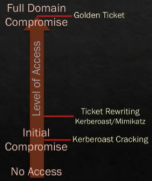
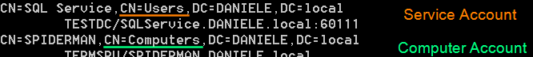

Kerberoasting
Difference with Golden Ticket exploitationTo launch
a Golden Ticket Exploitation we need to compromise the full Domain(control of the Domain Controller) and so have the
password hash of the “krbtgt” account. Once i have the password hash of the krbtgt account in fact is possible to
forge any tickets.
KerberoastingThis vulnerability is related to
the legacy support of Kerberos(v5) with Windows Server 2000. When this support is enabled
RC4_HMAC_MD5
encryption type is used.
NT
hash of the password is used as key for RC4_HMAC encryption method without using a salt.
Once the
NT hash of a host in a Domain is discovered, it can be used in a variety
of ways, including compromising the Active Directory Domain Controller.
How the Attack
worksThe attacker when receive the KRB_
TGS_REP can extracts the
encrypted
ServiceTicket that as seen in
Kerberos
explanation.
KRB_
TGS_REP contain:
◇
Session Key Service encrypted with “Session Key
TGS”
◇
ServiceTicket encrypted with
Service secret KeySince
ServiceTicket is been encrypted with the
hash of the
account linked to the requested
SPN, the attacker can crack this
encrypted blob offline to recover the
hash that is been used to encrypt the
ServiceTicket and then the account’s plaintext
password.
Note:• Because of during the attack we do not interact with the
Service(SPN), at the time of the attack the target
Service can also be unavailable. For a Defender this make also the detection of the
attack more difficult
• There are two kinds of SPNs:
◇ "
Service Accounts" → arbitrary SPNs that are linked
with a domain user account. These are the accounts of our interests because the hashes are generated by an User and
so more easily crackable
◇ "
Computer Accounts" → services that
are linked to the computer account and hosted on the computer itself. We can recognize Computer Accounts because
usually they all end with the dollar($) sign.
Passwords of those accounts would be unfeasible to crack because
are randomly generated 128-characters and are changed every 30 days
PS> setspn -T [DOMAIN] -F -Q */*
 Which
Service Accounts target?• Service Accounts with some elevated privileges that could be
interesting
• We have to target Service Account and not Computer Accounts, because the hashes of the last are
typically not possible to crack
example of interesting accounts: ◇
AGPMServer: Microsoft Advanced Group Policy Management → Often has full control rights to all GPOs
◇
MSSQL/MSSQLSvc → Admin rights to SQL server(s), which often has interesting data
◇ FIMService: Forefront
Identity Manager Service → Often has admin rights to multiple AD forests
◇ STS: Security Token Service
(VMware) → VMware SSO service which could provide backdoor VMware access
On adsecurity.org Sean
Metcalf(@PyroTek3) keeps an updated list of
SPNshttps://www.harmj0y.net/blog/powershell/kerberoasting-without-mimikatz/https://www.harmj0y.net/blog/activedirectory/targeted-kerberoasting/https://www.harmj0y.net/blog/redteaming/kerberoasting-revisited/https://www.scip.ch/en/?labs.20181011https://blog.redforce.io/oh-my-kerberos-do-not-get-kerberoasted/